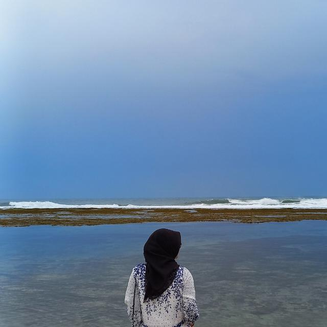

NURA BELA
S1 Teknik Informatika | Sistem Informasi
Tentang Saya
Haloo saya Nura Bela biasa dipanggil Bela, saya lahir di Bandung, 5 April 2002 saat ini saya berusia 21 tahun.
saya anak pertama dari 2 bersaudara, saat ini saya menjalani kuliah dengan mengikuti program kampus merdeka di Eduwork mengambil kelas Fullstack.
di Eduwork saya di mentori oleh kak Pelita, dan saya juga bisa satu kelas dengan mahasiswa dari berbagai kampus dan berbagai daerah.
Pendidikan
- SMAN 1 Katapang
- STMIK Mardira Indonesia
|
Organisasi
- Creative Student Association
- Taekwondo indonesia
|
Pengalaman
- Sekretaris UKM CSA periode 2021-2022
- Panitia Webinar Nasional "The Important of IT Security and Automation in the Industry 4.0 Era"
- Mentor Divisi pemograman di UKM CSA
|